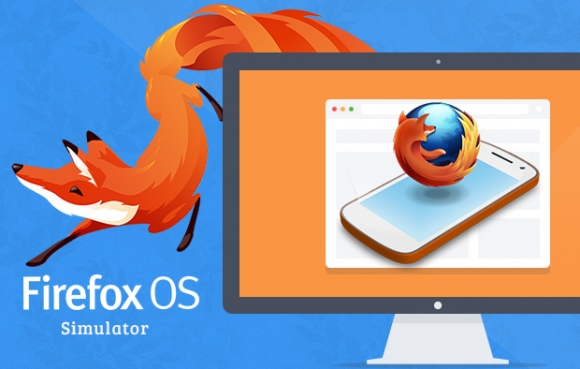

Firefox OS
Bootcamp - Hands On
Setting up our dev environment
Your favorite text editor
The Browser

The App Manager

You already have it in your browser
Firefox OS Simulator and ADB Helper
Building our first web app
You can download the code for this first step from GitHub
Testing on a real device
Web APIs in action
Battery API
You can download the code with the Battery API demo from GitHub
Device Proximity Sensor API
You can download the code with the Proximity Sensor API demo from Github
Firefox Dev Tools
Web Console
Page Inspector
Javascript Debugger
Network Monitor
3D view